minnomou.co copyright 2024. v.0.9 beta. /ab.html
minnomou
she/her (b. 2000, Mexico City) is a mexican producer, songwriter and illustrator. Yea thats about it. ill add more if i release my album idk
" i hate the antichrist "
— Charitable human being. [1]
1. made ya think didnt i
